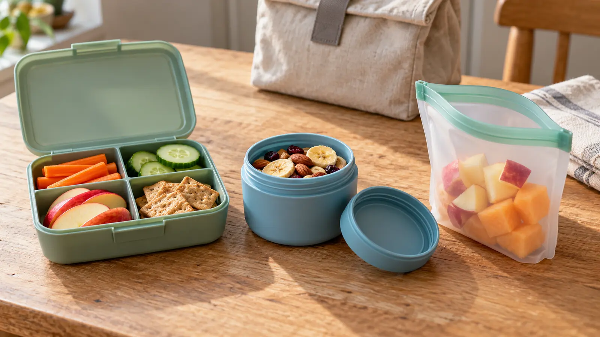

Divided hard box
Best when several dry or chilled foods must stay separated and crush protection matters. Tradeoffs: widest footprint, hinged-lid cleaning, limited flexibility and an all-at-once opening.
DAY-TRIP FOOD · BUYING GUIDE · EXPLORATION
The container does not make perishable food safe, allergy-aware or magically leakproof. Pick the food first, protect its temperature, then choose the smallest closure the actual child can use without creating a backpack disaster.

Write the actual snack, whether it must stay cold, when it will be eaten, who opens it and where the empty container goes. A divided box can organize four foods and still let cold chicken sit at an unsafe temperature. A zipper pouch can save space and still be miserable to clean. A screw-top cup can contain crushable food and still be too tight for the child.
USDA's bag-lunch safety guidance says perishable food in a lunch bag needs cold control and recommends an insulated bag with at least two cold sources. Its two-hour rule says perishable food should not stay at room temperature more than two hours, or one hour above 90°F. Follow current USDA guidance and the exact food's instructions. A container divider is not a cold source.
Do not claim a product is leakproof because one test went well. Use the maker's instructions first. Then perform an editorial compatibility check with cool tap water only if that use is permitted: close the clean container exactly as directed, place it upright in a separate washable bin, gently rotate it and let it sit for ten minutes. Any visible seep, misaligned seal or child-closing failure rejects it for wet food. Wash and dry it again before food use.
For dry snacks, load the actual portion and pack it with the cold sources and other bag contents. Carry the bag for ten minutes, set it upright and on its side, then open it over the table. This tests family handling and bag fit—not durability, drop resistance, food safety or the manufacturer's full claim.
A separate compartment is not an allergen-control certification. Crumbs, shared utensils, hands, manufacturing lines and a reused container can create cross-contact. Follow the child's clinician-directed plan, school or venue rules, labels and the family's food-allergy day-trip plan. Use clear ownership labels that do not expose private medical details, and never trade snacks casually.
The hero image includes generic nuts among several foods only to show container scale. It does not recommend nuts for a particular age, allergy situation, school or trip. Choose food for the actual child, with adult judgment about allergies and choking risk. Container marketing cannot make a food developmentally appropriate.
Cold perishable: use an insulated bag and the USDA-recommended cold-source plan; keep it closed and verify the timing. For a car-base lunch, the day-trip cooler guide handles loaded weight and food-temperature checks. Hot food: use a purpose-built insulated food jar and exact preheat/food instructions; compare the food-jar guide. A snack cup is not automatically a hot-food vessel.
Dry shelf-stable food: a simple owned container or clean disposable bag may be enough. Keep foods dry only when their package and storage instructions permit it. Cut produce: treat according to current food-safety guidance and temperature needs; “fruit” does not automatically mean safe all day in a warm car.
No-buy: use a clean owned food-storage container whose maker permits the planned use, wrap dry crush-resistant food as appropriate, or keep a sealed shelf-stable manufacturer package. Run the bag-fit test before replacing it. The day-trip system can assign one snack stop and prevent six half-used containers.
Low energy: pack one safe familiar snack in one familiar container and a separate water bottle. Bad weather: eat at home or in a legal sheltered place instead of turning the vehicle into a long buffet. Meltdown: choose the container the child can already open, not the cleverest category. Food timing beats presentation.
Divided box: the child wants visible choice, foods must stay apart and the bag has flat space. Skip for minimal loads or when every compartment creates another cleaning surface. Screw-top cup: one snack needs crush protection and the child can manage the threads. Skip if round containers roll away or the lid is routinely overtightened. Reusable pouch: dry snacks, a short outing and compact empty storage matter. Skip for liquids unless the exact maker approves them and the family validates the closure; skip when cleaning or drying is unreliable.
Reviewed October 23, 2026 by Mr Adventure Dad Editorial Desk using current USDA Food Safety and Inspection Service bag-lunch, outdoor-food and two-hour-rule guidance, plus the CPSC recall database for exact product checks. The category matrix, compatibility test and purchase framework are editorial. They do not certify a container, material, food, temperature or child. Commercial links are protected category searches using the site's existing approved affiliate ID; they are not exact-product endorsements. Report sourced corrections through About.
MAKE THE WEEK COUNT
Build the plan your family can finish well, then leave enough energy for the next part of the day.
More family plansTHE USEFUL STUFF
These are practical categories to compare—not a reason to overpack. Check fit, specifications and current reviews before buying.
Paid links: As an Amazon Associate I earn from qualifying purchases. You pay no additional cost.
Compare real bag footprint, latch independence, removable seals, compartment cleaning and the exact maker food-use instructions.
See current options → COMPARE ON AMAZONCheck child opening torque, thread and gasket cleaning, roll-away shape, usable volume and the maker's current leak claim.
See current options → COMPARE ON AMAZONBest for compact dry-food carry only after checking food-contact use, closure alignment, corner cleaning, full drying and crush protection.
See current options →